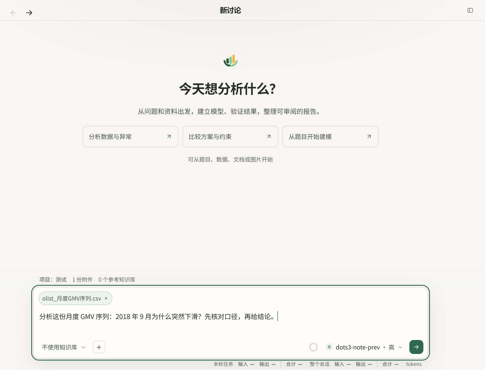
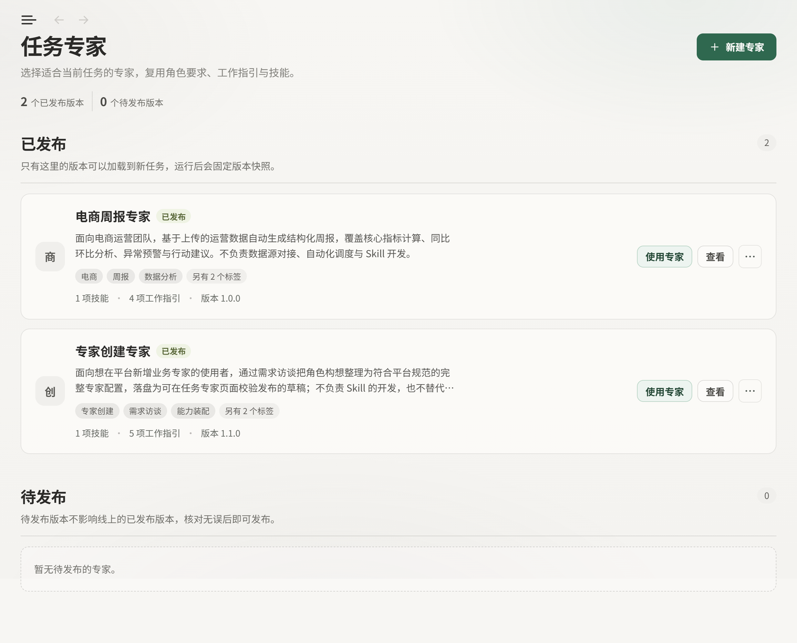

01
说清问题
描述业务问题，上传 CSV、Excel、文档或图片；也可以先选知识库，把口径带进来。

它把每一步留在同一份会话里：查了哪些字段、跑了什么代码、结论依据哪张表。
| 它做 | 它不做 |
|---|---|
| 先核对字段、口径与对比基准 | 不套固定分析模板 |
| 自己写代码、跑图表、复核产物 | 不在没有证据时给结论 |
| 留下中间表、脚本与结论 | 不替代数仓、指标平台与实时 BI |
描述业务问题，上传 CSV、Excel、文档或图片；也可以先选知识库，把口径带进来。

它先看数据长什么样，再决定用哪些工具；需要时写 Python，核对口径，复核图表。
| 动作 | 工具 |
|---|---|
| 看数据 | profile_datainspect_data_rows |
| 跑代码 | execute_python |
| 复核图表 | inspect_generated_image |
| 交付产物 | write_artifactinspect_artifact |
本次会话里，它核对了 9 个 CSV 的字段，复算 AOV，再与既有报告对齐。
报告、图表、中间表与脚本都落在产物目录；关键数字能回到原始文件和代码。
产物目录保留规划、图表与中间表。
从一次性的临时分析，到固定节奏的周期报告。
口径、角色要求与交付习惯，可以存成知识库和任务专家；下一次直接复用。

准备 Python、Node 和一个模型 API，三条命令启动。
3.11+18+bge-small-zh-v1.5联网检索与文档转换分别需要 Tavily 和 MinerU 密钥。模型 Key 填进项目根目录的 .env，字段见 .env.example。
uv sync
cd web && npm install
.\start.ps1启动后访问 http://localhost:5173；生产模式用 .\start.ps1 prod 起在 8000。